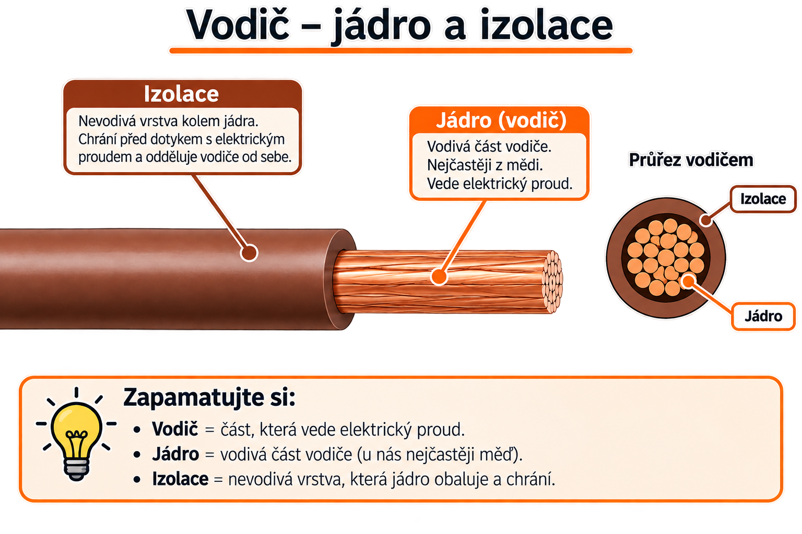

Kapitola 1: Značení vodičů, kabelů, přístrojů a svorek
Odborný výcvik – Jednoduché elektromontážní práce | 1. ročník
Kritéria hodnocení
Váha známky: 0,25
Váha známky: 0,25
Projekt je ohodnocen dvěma známkami.
Zapojení, program a prezentace.
Váha známky: 1,0
Váha známky: 1,0
Úspěšné odevzdání projektu je nezbytnou podmínkou pro úspěšné dokončení předmětu. Neodevzdaný nebo neuznaný projekt či jeho dokumentace znamená známku Nedostatečný za tuto část PRA a tím i na vysvědčení (viz školní řád).
Význam vodičů a vymezení pojmů
Elektrické vodiče jsou důležitou součástí elektrických instalací. Jejich hlavním úkolem je vést elektrický proud. Používají se například ve strojích, spotřebičích, rozváděčích a elektrických rozvodech.
Vodič je část elektrického obvodu, která slouží k přenosu elektrické energie nebo elektrického signálu.
Vodivá část vodiče, kterou prochází elektrický proud. Nejčastěji je vyrobena z mědi nebo hliníku.
Nevodivá vrstva kolem jádra. Chrání člověka před úrazem elektrickým proudem a zabraňuje nežádoucímu spojení vodičů.
U izolovaného vodiče ji tvoří vodivé jádro společně s jeho izolací.
Obsahuje jednu nebo více žil, které jsou chráněny společným izolačním pláštěm.

Vodivou část vodiče nazýváme jádro. Jádro společně s izolací tvoří žílu.
Základní rozdělení vodičů
Podle toho, zda je vodivé jádro chráněno izolační vrstvou, rozdělujeme vodiče na holé vodiče a izolované vodiče.
1. Holé vodiče
Holé vodiče nemají žádnou izolační vrstvu. Ochrana před dotykem a vznikem zkratu je zajištěna především jejich vhodným umístěním nebo instalací do krytých prostor.
Využití
- venkovní nadzemní elektrická vedení,
- trolejová vedení tramvají a vlaků,
- uzemňovací soustavy,
- přípojnice v rozvodnách a rozváděčích.
Materiál
Nejčastěji se používá hliník nebo měď.
U venkovních vedení se používají také hliníková lana s ocelovým jádrem, která mají větší mechanickou pevnost.
2. Izolované vodiče
Izolované vodiče mají vodivé jádro pokryté vrstvou elektroizolačního materiálu. Izolace může být například z plastu, pryže nebo laku.
Izolace zabraňuje nežádoucímu spojení vodiče s jiným vodičem nebo se zemí a zároveň pomáhá chránit člověka před úrazem elektrickým proudem.
Využití
- domovní elektroinstalace,
- přívodní šňůry elektrických spotřebičů,
- vnitřní zapojení elektrických strojů,
- zapojení rozváděčů.
Úkol izolace
Izolace odděluje vodivé jádro od okolí. Zabraňuje nežádoucímu elektrickému spojení a pomáhá chránit před nebezpečným dotykem.
Konstrukční formy izolovaných vodičů
Obsahují jednu izolovanou žílu. Jádro může být tvořeno jedním drátem nebo větším počtem jemnějších drátků. Příkladem jsou vodiče CY nebo CYA.
Obsahují jednu nebo více izolovaných žil, které jsou společně chráněny dalším pláštěm. Příkladem je kabel CYKY.
Jsou ohebné vodiče nebo kabely určené hlavně pro pohyblivé přívody elektrických spotřebičů.
Jádro je tvořeno větším počtem jemných drátků. Díky tomu lze vodič snadněji ohýbat.
Holý vodič = nemá izolaci.
Izolovaný vodič = jádro je chráněno izolací.
Vodiče podle funkce
V elektrotechnické praxi se pojem vodič často používá společně s označením jeho funkce v elektrickém obvodu.
Podle funkce se nejčastěji setkáme s vodiči L, N, PE a PEN.
Je při běžném provozu pod napětím a slouží k přenosu elektrické energie.
Je elektricky spojený s nulovým bodem elektrické soustavy a podílí se na rozvodu elektrické energie.
Slouží k ochraně před úrazem elektrickým proudem. Spojuje neživé kovové části elektrických zařízení s ochranným bodem nebo uzemněním.
Plní současně funkci ochranného vodiče PE a nulového vodiče N. Používá se například v sítích TN-C.
L = fázový vodič
N = nulový vodič
PE = ochranný vodič
PEN = společný ochranný a nulový vodič
Značení vodičů a kabelů
Existuje mnoho druhů vodičů a kabelů. Aby bylo možné jednoduše určit jejich vlastnosti a použití, používá se systém značení.
Označení se čte postupně zleva doprava. Jednotlivá písmena a čísla nám mohou říci například jmenovité napětí, druh izolace, konstrukci kabelu, materiál jádra nebo provedení jádra.
A – harmonizovaný vodič národního typu
03 – 300/300 V
05 – 300/500 V
07 – 450/750 V
S – silikonová pryž
V – PVC
V2 – žáruvzdorné PVC
V3 – PVC pro nízké teploty
V4 – zesítěné PVC
V5 – speciální olejodolné PVC
C4 – měděné stínění uprostřed
V2 – žáruvzdorné PVC
V3 – PVC pro nízké teploty
V4 – zesítěné PVC
V5 – speciální olejodolné PVC
H – plochý, dělitelný kabel
H2 – plochý, nedělitelný kabel
H6 – plochý kabel se 3 nebo více žilami
– bez dalšího označení – měď
H – nejjemnější drát
K – jemný drát
R – pevné lanované jádro kruhového průřezu
U – jednodrátové jádro kruhového průřezu
Y – leonské lanko
Hardware – Arduino UNO
Existuje mnoho typů Arduino desek. Liší se výkonem, počtem pinů, pamětí a možnostmi komunikace, například přes WiFi nebo Bluetooth. V hodinách budeme používat především Arduino UNO s mikrokontrolérem ATmega 328.
Základní části desky


Princip fungování embedded systémů
Slovo embedded označuje systém, který je součástí určitého zařízení. Mikrokontrolér v ledničce, automobilu nebo robotu vykonává konkrétní úkol podle programu, který je v něm uložen.

Vstupy
Senzory, tlačítka, komunikace a naměřené hodnoty.
Programová logika
Arduino čte vstupy, vyhodnocuje podmínky a rozhoduje.
Výstupy
LED, displej, motor, relé, bzučák nebo jiné zařízení.
Psaní programu pro Arduino
Program pro Arduino obsahuje dvě základní funkce: setup() a loop().
// Sem patří knihovny, konstanty a proměnné.
void setup() {
// Kód v této funkci se provede pouze jednou po spuštění Arduina.
}
void loop() {
// Hlavní kód programu se stále opakuje dokola.
}Slouží například pro nastavení pinů, spuštění sériové komunikace nebo inicializaci knihoven.
Obsahuje hlavní část programu, která se neustále opakuje, dokud je Arduino zapnuté.
Blikání LEDkou na desce Arduina
Přímo na desce Arduina je jedna LED, kterou můžeme z programu ovládat. Je připojena na pin 13. Co budeme potřebovat?
Touto funkcí nastavíme pin 13, kde je připojena LEDka, jako výstup.
pinMode(13, OUTPUT);Touto funkcí přivedeme na pin 13 logickou jedničku (HIGH). Tím se na pin připojí 5 V a LEDka se rozsvítí.
digitalWrite(13, HIGH); // zapnutí LEDProtože mikroprocesor v Arduinu pracuje s frekvencí 16 MHz, tak pokud bychom jen neustále měnili stav na pinu, nebylo by blikání pro lidské oko viditelné. Proto přidáme pauzu, aby oko stihlo vnímat, že LEDka svítí.
delay(1000); // čekání po dobu jedné sekundyCelý program blikání LEDkou
// sem přijde vložení knihoven, inicializace proměnných...
int led = 13;
void setup() {
// zde vložte kód, který má běžet pouze jednou
pinMode(led, OUTPUT);
}
void loop() {
// zde vložte hlavní kód, který se bude opakovat donekonečna
digitalWrite(led, HIGH); // zapnutí LED
delay(1000); // čekání po dobu jedné sekundy
digitalWrite(led, LOW); // vypnutí LED
delay(1000); // čekání po dobu jedné sekundy
}LED dioda – základní informace
LED je zkratka pro Light Emitting Diode, tedy diodu emitující světlo. Jde o polovodičovou součástku, která při průchodu elektrického proudu přeměňuje elektrickou energii na světlo.
Princip fungování
LED dioda obsahuje PN přechod. Pokud jí prochází proud v propustném směru, elektrony přecházejí z vrstvy typu N do vrstvy typu P. Při jejich rekombinaci s dírami se uvolňuje energie ve formě fotonů, tedy světla.
Barva vyzařovaného světla závisí na použitém polovodičovém materiálu. Intenzita svitu se mění podle velikosti proudu, který diodou prochází.
Delší vývod LED. Připojuje se přes rezistor ke kladnému napětí nebo k digitálnímu pinu Arduina.
Kratší vývod LED. Připojuje se k zápornému pólu zdroje nebo na GND. U běžné LED bývá označena také zploštělou stranou pouzdra.

Přidání další LED a nepájivé pole
Na desce Arduina je jen jedna LEDka, kterou můžeme ovládat (pokud nepočítáme LEDky na pinech Tx a Rx, které ale využíváme k programování Arduina). Zkusíme si teď připojit další LEDku s pomocí nepájivého pole. Nesmíme zapomenout na sériový odpor. Jak spočítat jeho velikost?

Nepájivé pole je univerzální montážní deska určená k sestavování a testování elektronických obvodů bez nutnosti pájení. Je tvořeno plastovým tělem s hustou sítí otvorů, pod nimiž jsou vodivě propojené řady a sloupce. Ty umožňují jednoduché elektrické spojení mezi vloženými vodiči a součástkami.

Struktura pole je obvykle rozdělena na dvě hlavní části:
- Střední pracovní oblast – slouží k osazování integrovaných obvodů a dalších pasivních nebo aktivních prvků.
- Boční napájecí lišty – jsou označené jako „+“ a „−“ a slouží k přivedení napájecího napětí.
Při zapojování externí LED je nutné použít sériový rezistor. Ten omezuje proud, který LED prochází, a chrání ji před poškozením.

Úkol 1
- Zapojte do nepájivého pole LEDku s rezistorem. Připojte anodu LEDky na některý digitální pin Arduina (vyberte jeden z pinů 2-12). Napište program tak, aby se vždy po 1s střídavě rozsvěcovala LEDka na Arduino desce (na pinu 13) a LEDka na nepájivém poli.
- V posledním kroku se budou střídávě rozsvěcovat všechny 3 LED diody.

Sériová linka
Sériová linka umožňuje posílat data mezi Arduinem a počítačem. V Arduino IDE se přijaté zprávy zobrazují v nástroji Sériový monitor.
Serial.print("text");– vypíše text do sériového monitoru.Serial.print(promenna);– vypíše hodnotu proměnné.Serial.println();– vypíše text nebo hodnotu a přejde na nový řádek.
Příklad programu
int cislo = 5;
void setup() {
Serial.begin(9600);
}
void loop() {
Serial.print("Hodnota promenne cislo je: ");
Serial.println(cislo);
}Úkoly k sériové lince
- Do programu s blikáním LED přidejte výpis stavů „svítí“ a „nesvítí“ pomocí Serial.println().
- Napište program, který stále zvyšuje hodnotu proměnné a odesílá ji do sériového monitoru. Upravte datový typ nebo přírůstek tak, aby došlo k přetečení.
- Pomocí cyklu vypište do sériového monitoru čísla od 0 do 15 včetně.
- Pomocí cyklu vypište do sériového monitoru čísla od 10 do −5.
- Pomocí cyklu vypište sudá čísla od 2 do 20 včetně.
- Vytvořte program: po spuštění 2 s čeká, potom 1 s svítí LED, následně 25× blikne LED v intervalu 200 ms zapnuto a 200 ms vypnuto. Potom LED zhasne a zůstane zhasnutá.